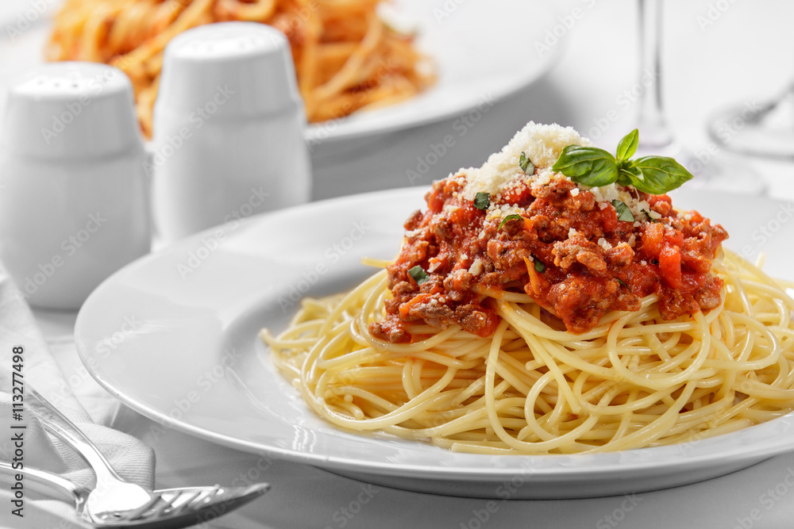

Lasagna alla Bolognese

Globally beloved, the dish known as Spaghetti Bolognese is a pasta dish with meat-based sauce derived loosely from the traditional ragù of Bologna. While purists may note that classic “ragù alla Bolognese” is served with tagliatelle rather than spaghetti, the simplicity and flavourfulness of this version make it an accessible, authentic-inspired dish.
Ingredients (serves 1 personally-sized portion)
- 80~100 g spaghetti (dry weight)
- 150 g ground beef (80/20 blend preferred)
- 1 Tbsp olive oil
- ½ onion (~50 g), finely chopped
- 1 garlic clove, minced
- 1 celery stalk (~30 g), finely diced
- 1 small carrot (~40 g), finely diced
- 200 g canned peeled tomatoes (or crushed)
- 1 Tbsp tomato paste
- Salt & freshly ground black pepper to taste
- 50 ml red wine (optional)
- Fresh basil leaves or parsley for garnish (optional)
Steps and Method
- Bring a pot of salted water to a boil for the pasta; cook spaghetti until al dente (according to package) just before sauce is ready.
- Make the sause: Heat olive oil in a skillet. Sauté onion, garlic, carrot, celery until soft (≈5 min). Add ground beef; brown thoroughly.
- Stir in tomato paste, then add canned tomatoes (crushed or broken up) and red wine (if using). Lower heat and simmer for ~20–30 minutes until sauce thickens; season with salt & pepper.
- Drain spaghetti, reserving a small splash of pasta water. Add spaghetti to the sauce, toss to coat (adding a little pasta water if needed to loosen).
- Plate the pasta, garnish with basil or parsley, and optionally sprinkle some grated Parmesan.
Important Notes
- Browning the meat thoroughly helps build flavour.
- Simmering long enough concentrates the sauce and avoids watery texture.
- Cook spaghetti just until al dente, since it will finish in the sauce.
Recommendations to Serve With
- A simple mixed-leaf salad with light vinaigrette.
- Garlic bread or toasted baguette slices.
- A glass of red wine (e.g., Chianti) or sparkling water with lime.
Conclusion
This Spaghetti Bolognese recipe focuses on authenticity (ragù-inspired), flavourfulness through sautéing and simmering, and simplicity through concise steps and common ingredients. A reliable dish for a comforting meal.
Check out for other dishes...